Samaprabha/reveal-rock-new.png
Proposed replacement — awaiting image approval
1016.2 KB → 106.7 KB (1254×1254 → 952×952) · existing production 283.5 KB
SSIM 0.9732 · PSNR 36.96 dB · alpha-edge 2.96 · alpha 0.260 FLAGGED: SSIM <0.98, PSNR <38 dB
Original: src/zones/shloka-river/scenes/Scene2/assets/images/Samaprabha/reveal-rock-new.pngCandidate: src/zones/shloka-river/scenes/Scene2/assets/images-opt/Samaprabha/reveal-rock-new-opt.webp
Alpha retained · q85 · resized with margin · sampled max box 352×268 CSS px at 1366 stage
Real display size
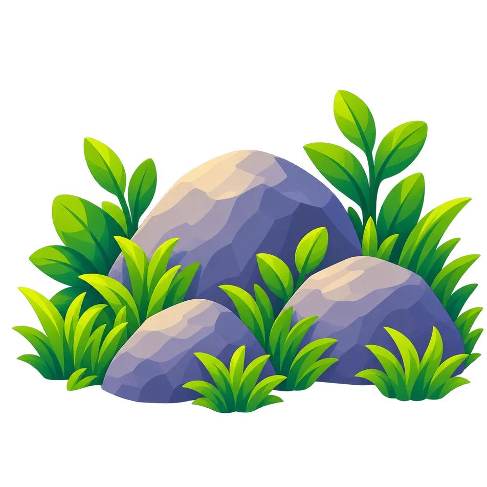
3× zoom — pan to inspect fine detail and alpha edges
Suryakoti/bunny-happy-zip.png
Proposed replacement — awaiting image approval
32.8 KB → 10.5 KB (400×400 → 302×302) · existing production 15.4 KB
SSIM 0.9839 · PSNR 39.29 dB · alpha-edge 5.63 · alpha 0.380 FLAGGED: Alpha-edge >5/255
Original: src/zones/shloka-river/scenes/Scene2/assets/images/Suryakoti/bunny-happy-zip.pngCandidate: src/zones/shloka-river/scenes/Scene2/assets/images-opt/Suryakoti/bunny-happy-zip-opt.webp
Alpha retained · q85 · resized with margin · sampled max box 111×111 CSS px at 1366 stage (pose-container size inferred from CSS)
Real display size
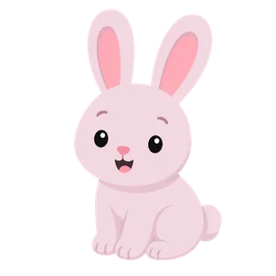
3× zoom — pan to inspect fine detail and alpha edges
Suryakoti/sun-zip.png
KEEP ORIGINAL — candidate costs more than the existing production PNG
89.4 KB → 31.1 KB (700×700 → 518×518) · existing production 25.3 KB
SSIM 0.9908 · PSNR 41.91 dB · alpha-edge 4.97 · alpha 0.405 FLAGGED: KEEP ORIGINAL: production PNG is smaller
Original: src/zones/shloka-river/scenes/Scene2/assets/images/Suryakoti/sun-zip.pngCandidate: src/zones/shloka-river/scenes/Scene2/assets/images-opt/Suryakoti/sun-zip-opt.webp
Alpha retained · q85 · resized with margin · sampled max box 191×191 CSS px at 1366 stage (pose-container size inferred from CSS)
Real display size
3× zoom — pan to inspect fine detail and alpha edges
Samaprabha/shadow-reed.png
KEEP ORIGINAL — candidate costs more than the existing production PNG
799.9 KB → 125.8 KB (1448×1086 → 1448×1086) · existing production 88.9 KB
SSIM 0.9952 · PSNR 48.95 dB · alpha-edge 1.34 · alpha 0.148 FLAGGED: KEEP ORIGINAL: production PNG is smaller
Original: src/zones/shloka-river/scenes/Scene2/assets/images/Samaprabha/shadow-reed.pngCandidate: src/zones/shloka-river/scenes/Scene2/assets/images-opt/Samaprabha/shadow-reed-opt.webp
Alpha retained · q85 · source dimensions retained · sampled max box 538×390 CSS px at 1366 stage
Real display size
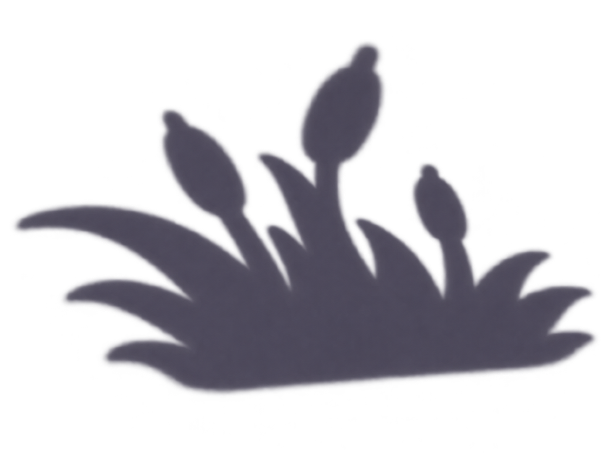
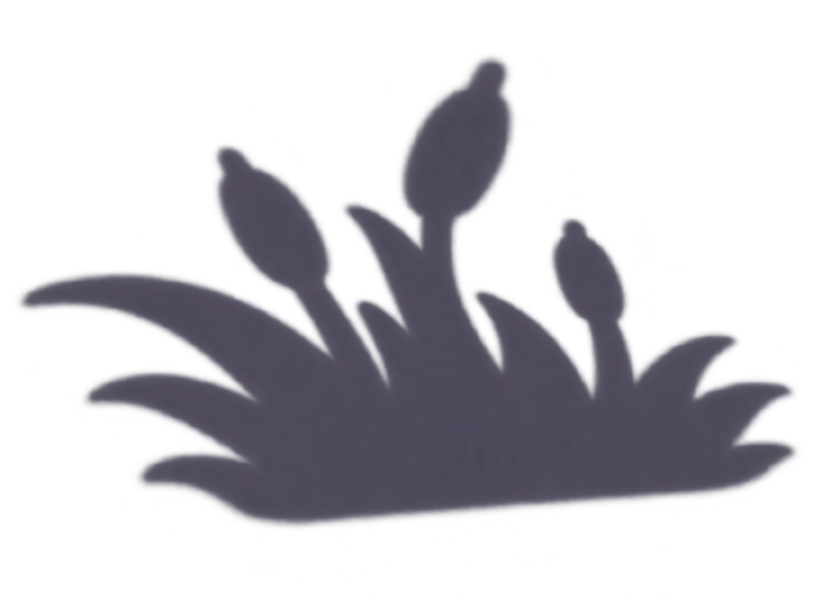
3× zoom — pan to inspect fine detail and alpha edges
Samaprabha/shadow-leaves.png
KEEP ORIGINAL — candidate costs more than the existing production PNG
400.9 KB → 61.5 KB (1448×1086 → 1448×1086) · existing production 43.8 KB
SSIM 0.9974 · PSNR 51.95 dB · alpha-edge 1.31 · alpha 0.073 FLAGGED: KEEP ORIGINAL: production PNG is smaller
Original: src/zones/shloka-river/scenes/Scene2/assets/images/Samaprabha/shadow-leaves.pngCandidate: src/zones/shloka-river/scenes/Scene2/assets/images-opt/Samaprabha/shadow-leaves-opt.webp
Alpha retained · q85 · source dimensions retained · sampled max box 566×382 CSS px at 1366 stage
Real display size
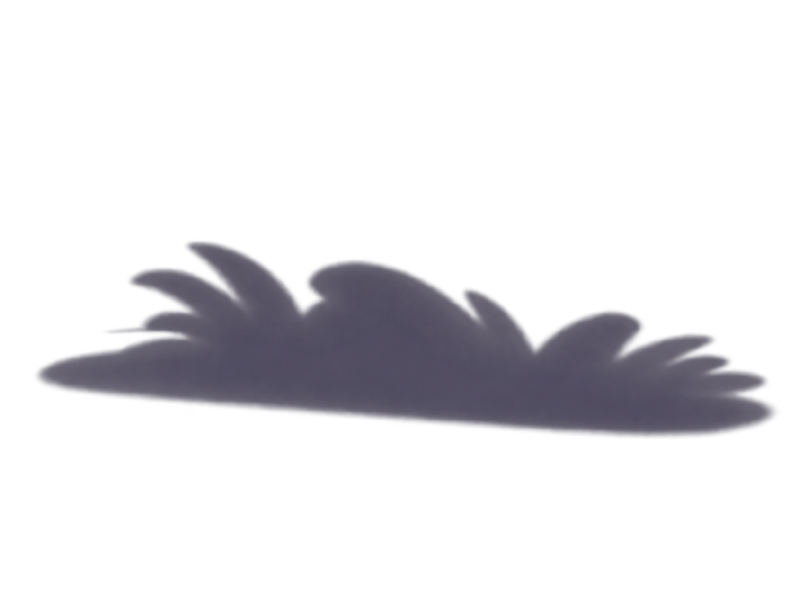
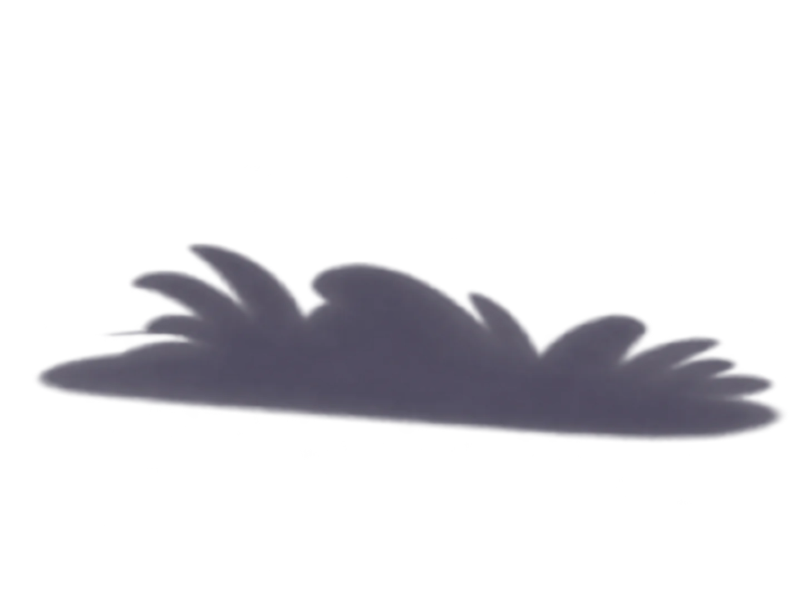
3× zoom — pan to inspect fine detail and alpha edges
Samaprabha/shadow-branch.png
KEEP ORIGINAL — candidate costs more than the existing production PNG
480.9 KB → 94.6 KB (1448×1086 → 1448×1086) · existing production 46.2 KB
SSIM 0.9978 · PSNR 52.18 dB · alpha-edge 1.23 · alpha 0.066 FLAGGED: KEEP ORIGINAL: production PNG is smaller
Original: src/zones/shloka-river/scenes/Scene2/assets/images/Samaprabha/shadow-branch.pngCandidate: src/zones/shloka-river/scenes/Scene2/assets/images-opt/Samaprabha/shadow-branch-opt.webp
Alpha retained · q85 · source dimensions retained · sampled max box 635×326 CSS px at 1366 stage
Real display size
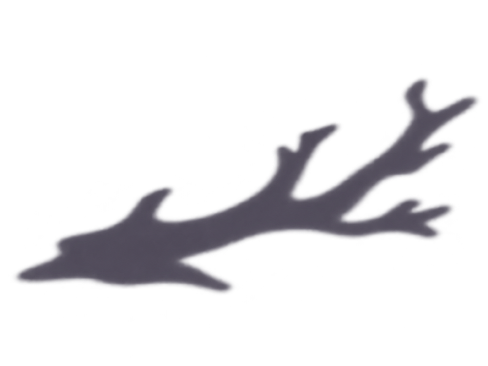
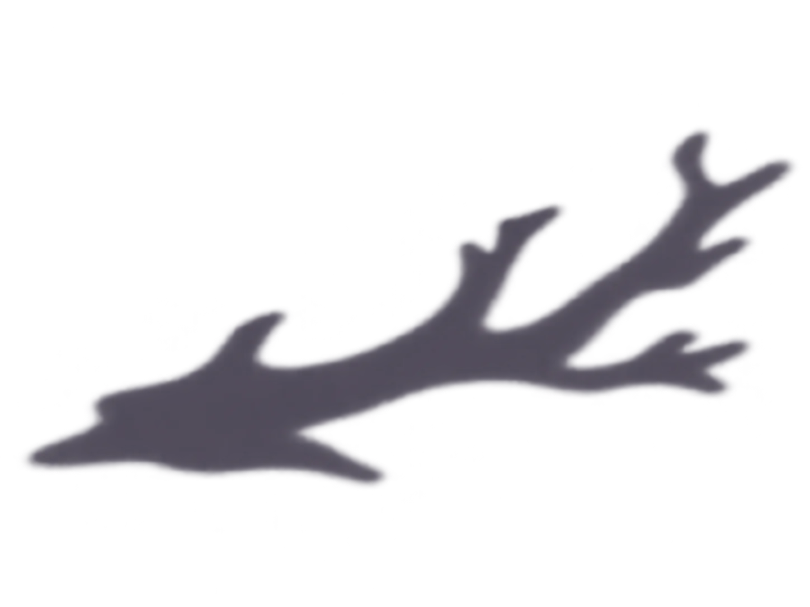
3× zoom — pan to inspect fine detail and alpha edges
saurakoti-bg.png
Proposed replacement — awaiting image approval
802.1 KB → 36.1 KB (2048×1536 → 2048×1536) · existing production 367.9 KB
SSIM 0.9819 · PSNR 44.15 dB · alpha-edge 0.00 · alpha 0.000 passes metric gate
Original: src/zones/shloka-river/scenes/Scene2/assets/images/saurakoti-bg.pngCandidate: src/zones/shloka-river/scenes/Scene2/assets/images-opt/saurakoti-bg-opt.webp
Opaque background · q85 · source dimensions retained · sampled max box 1366×1024 CSS px at 1366 stage
Real display size
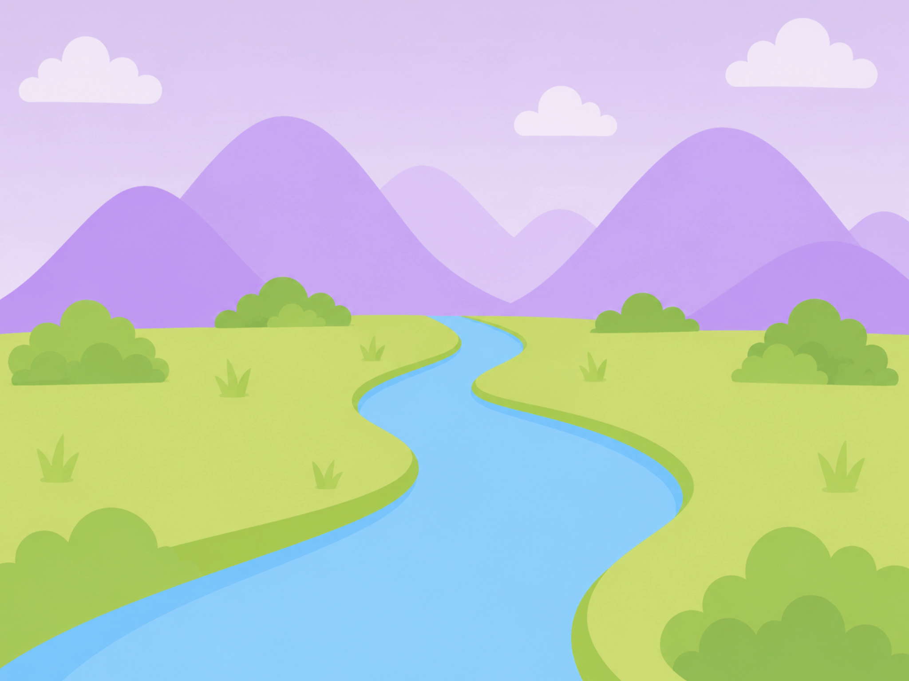

3× zoom — pan to inspect fine detail and alpha edges
Suryakoti/bunny-sad-zip.png
Proposed replacement — awaiting image approval
33.4 KB → 11.2 KB (400×400 → 302×302) · existing production 17.2 KB
SSIM 0.9850 · PSNR 39.46 dB · alpha-edge 4.32 · alpha 0.366 passes metric gate
Original: src/zones/shloka-river/scenes/Scene2/assets/images/Suryakoti/bunny-sad-zip.pngCandidate: src/zones/shloka-river/scenes/Scene2/assets/images-opt/Suryakoti/bunny-sad-zip-opt.webp
Alpha retained · q85 · resized with margin · sampled max box 111×111 CSS px at 1366 stage
Real display size
3× zoom — pan to inspect fine detail and alpha edges
Samaprabha/reveal-branch-new.png
Proposed replacement — awaiting image approval
1443.0 KB → 115.0 KB (1536×1024 → 1284×856) · existing production 217.8 KB
SSIM 0.9850 · PSNR 40.99 dB · alpha-edge 2.89 · alpha 0.394 passes metric gate
Original: src/zones/shloka-river/scenes/Scene2/assets/images/Samaprabha/reveal-branch-new.pngCandidate: src/zones/shloka-river/scenes/Scene2/assets/images-opt/Samaprabha/reveal-branch-new-opt.webp
Alpha retained · q85 · resized with margin · sampled max box 475×475 CSS px at 1366 stage
Real display size
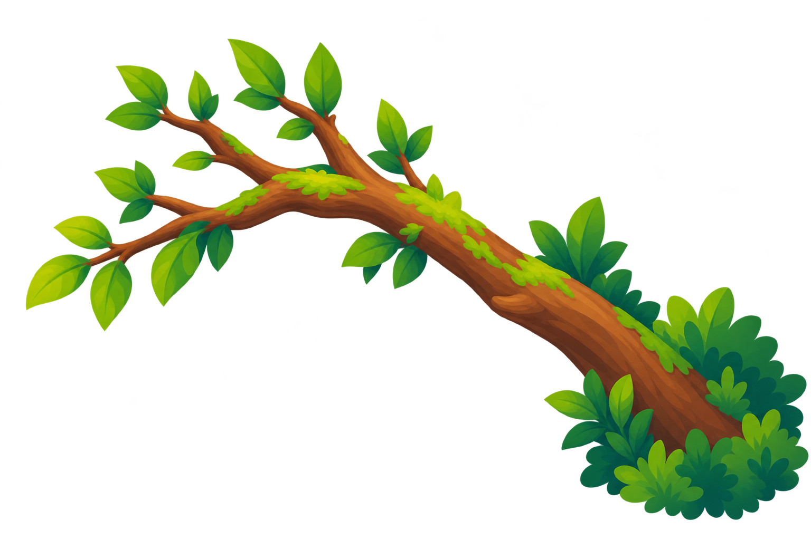
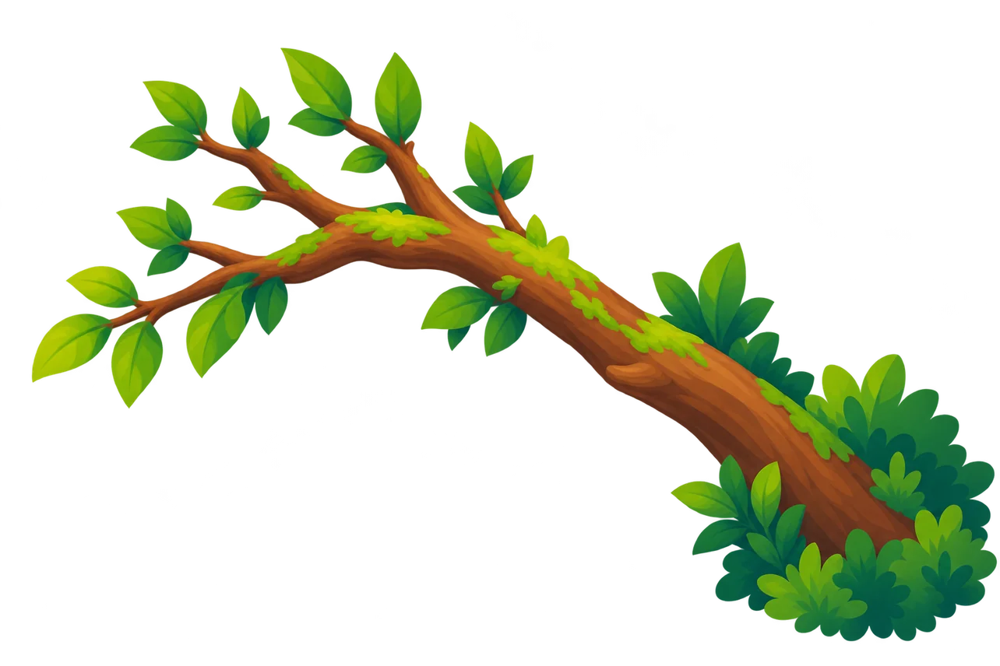
3× zoom — pan to inspect fine detail and alpha edges
Suryakoti/burrow-zip.png
Proposed replacement — awaiting image approval
91.4 KB → 21.4 KB (700×700 → 518×518) · existing production 45.4 KB
SSIM 0.9870 · PSNR 41.71 dB · alpha-edge 3.11 · alpha 0.180 passes metric gate
Original: src/zones/shloka-river/scenes/Scene2/assets/images/Suryakoti/burrow-zip.pngCandidate: src/zones/shloka-river/scenes/Scene2/assets/images-opt/Suryakoti/burrow-zip-opt.webp
Alpha retained · q85 · resized with margin · sampled max box 191×191 CSS px at 1366 stage
Real display size
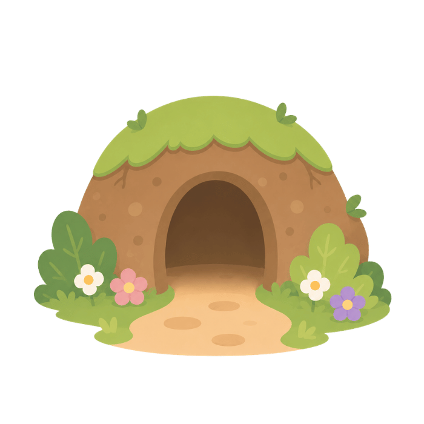
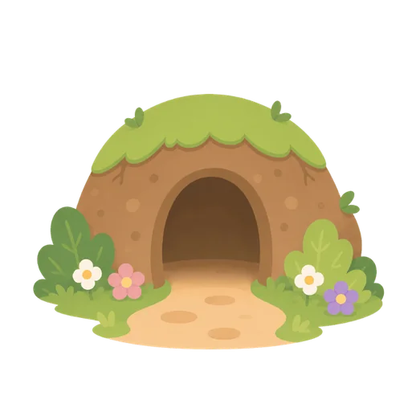
3× zoom — pan to inspect fine detail and alpha edges
Samaprabha/fawn-walk-new.png
Proposed replacement — awaiting image approval
519.7 KB → 21.6 KB (1254×1254 → 406×406) · existing production 123.0 KB
SSIM 0.9927 · PSNR 40.83 dB · alpha-edge 2.67 · alpha 0.493 passes metric gate
Original: src/zones/shloka-river/scenes/Scene2/assets/images/Samaprabha/fawn-walk-new.pngCandidate: src/zones/shloka-river/scenes/Scene2/assets/images-opt/Samaprabha/fawn-walk-new-opt.webp
Alpha retained · q85 · resized with margin · sampled max box 150×150 CSS px at 1366 stage (pose-container size inferred from CSS)
Real display size
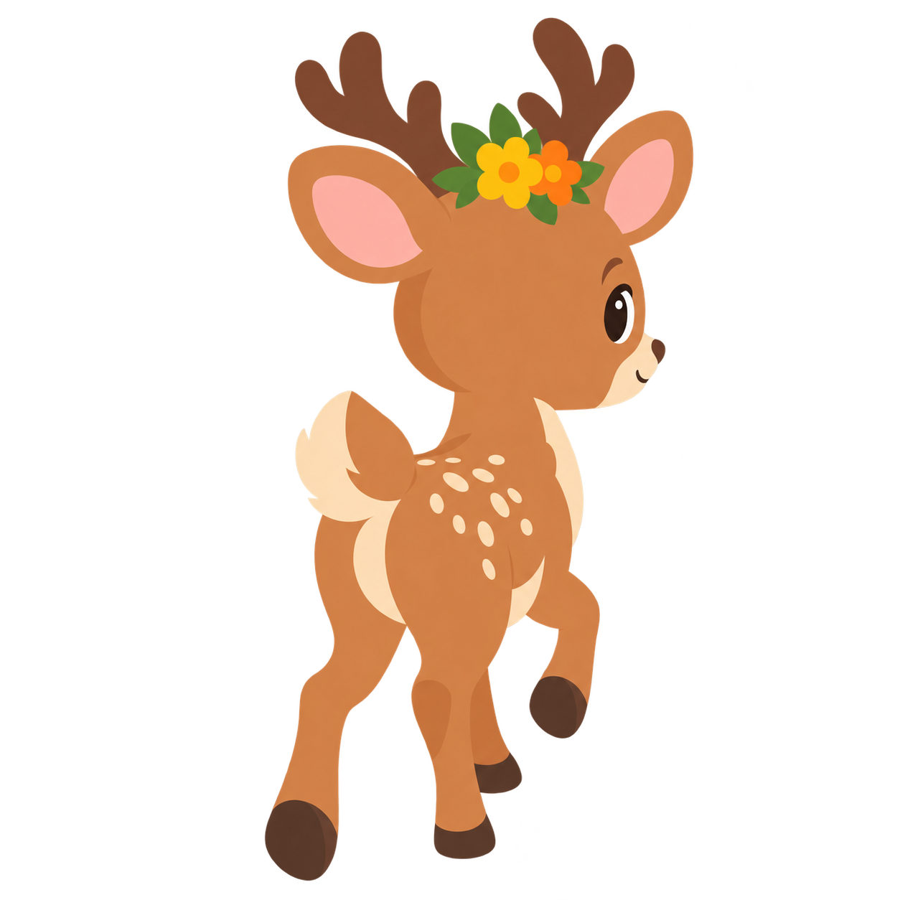
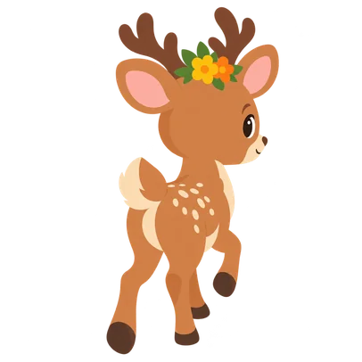
3× zoom — pan to inspect fine detail and alpha edges
Samaprabha/reveal-reeds-leaves.png
Proposed replacement — awaiting image approval
324.2 KB → 62.2 KB (1254×1254 → 992×992) · existing production 102.1 KB
SSIM 0.9958 · PSNR 44.78 dB · alpha-edge 2.80 · alpha 0.252 passes metric gate
Original: src/zones/shloka-river/scenes/Scene2/assets/images/Samaprabha/reveal-reeds-leaves.pngCandidate: src/zones/shloka-river/scenes/Scene2/assets/images-opt/Samaprabha/reveal-reeds-leaves-opt.webp
Alpha retained · q85 · resized with margin · sampled max box 367×390 CSS px at 1366 stage
Real display size
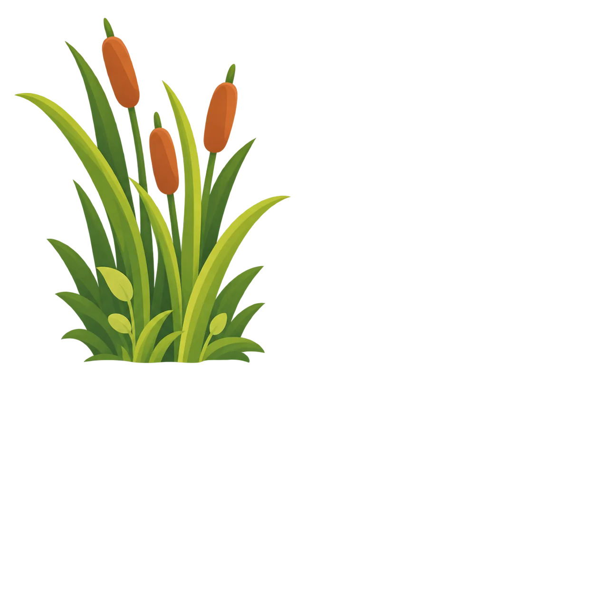
3× zoom — pan to inspect fine detail and alpha edges
Samaprabha/shadow-stump.png
Proposed replacement — awaiting image approval
474.2 KB → 45.1 KB (1448×1086 → 1260×945) · existing production 53.9 KB
SSIM 0.9966 · PSNR 49.57 dB · alpha-edge 1.51 · alpha 0.091 passes metric gate
Original: src/zones/shloka-river/scenes/Scene2/assets/images/Samaprabha/shadow-stump.pngCandidate: src/zones/shloka-river/scenes/Scene2/assets/images-opt/Samaprabha/shadow-stump-opt.webp
Alpha retained · q85 · resized with margin · sampled max box 467×566 CSS px at 1366 stage
Real display size
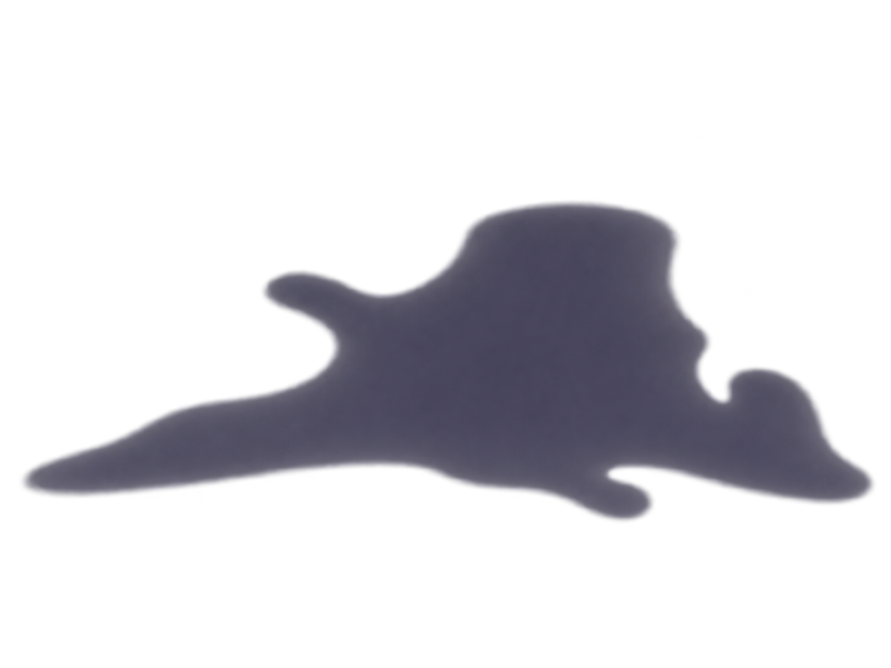
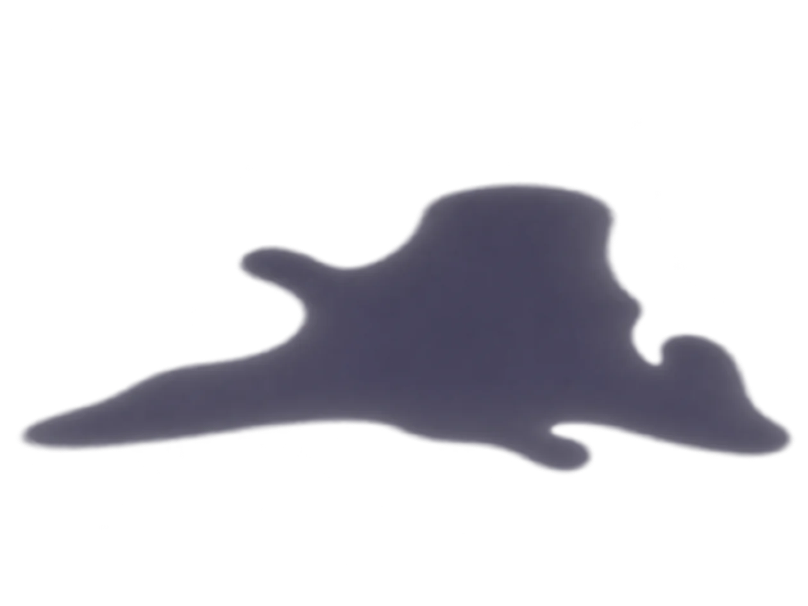
3× zoom — pan to inspect fine detail and alpha edges
Samaprabha/reveal-stump.png
Proposed replacement — awaiting image approval
192.4 KB → 30.1 KB (1254×1254 → 1254×1254) · existing production 55.3 KB
SSIM 0.9976 · PSNR 49.44 dB · alpha-edge 1.96 · alpha 0.069 passes metric gate
Original: src/zones/shloka-river/scenes/Scene2/assets/images/Samaprabha/reveal-stump.pngCandidate: src/zones/shloka-river/scenes/Scene2/assets/images-opt/Samaprabha/reveal-stump-opt.webp
Alpha retained · q85 · source dimensions retained · sampled max box 467×566 CSS px at 1366 stage
Real display size
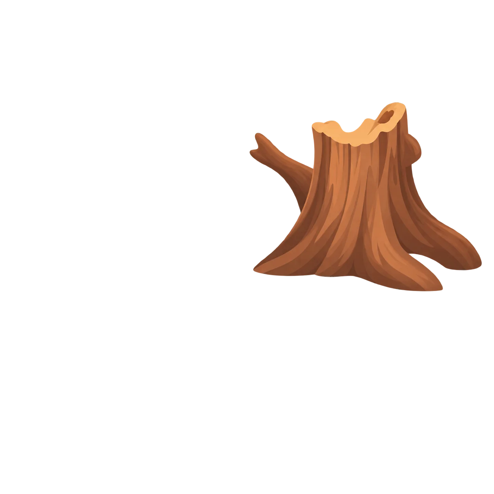